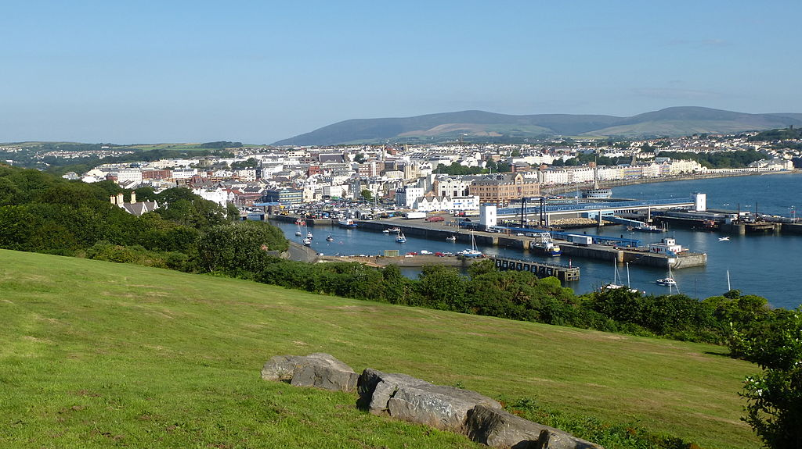
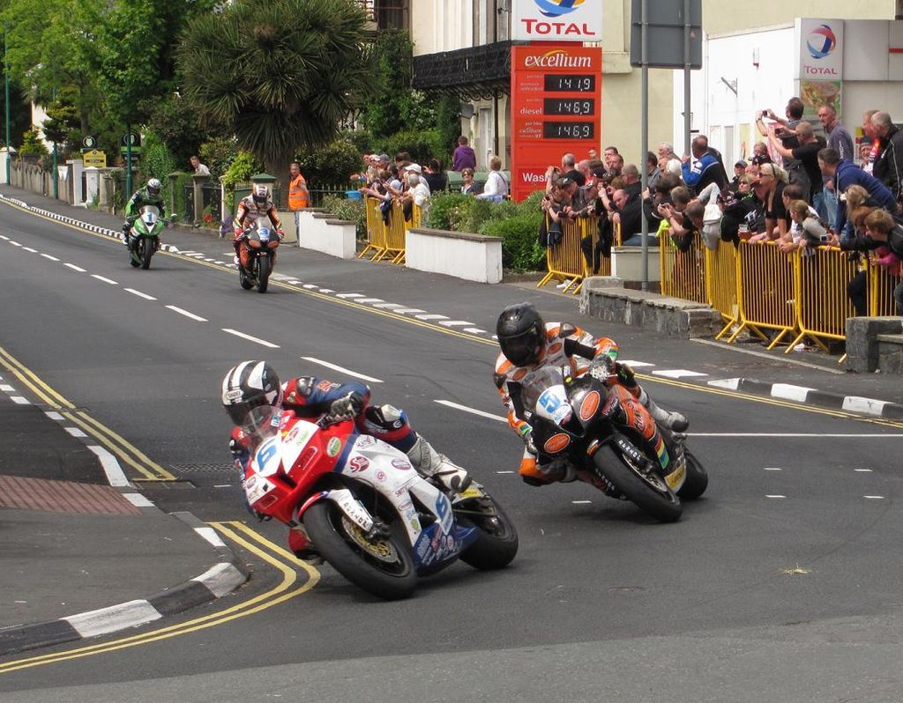
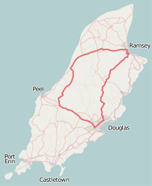
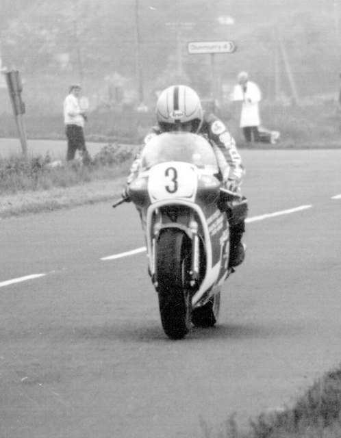

Inleiding
Deze website werd gemaakt met als doel een inleiding te geven tot de gekke wereld van the Isle of Man TT. Je kan hier verschillende onderwerpen terugvinden die inzicht geven op de verschillende aspecten van de sport.

Rumburak3, CC BY-SA 4.0
Competitie
Achter iedere sport zit een set regels die uniek zijn aan deze sport. Dit is ook het geval bij the Isle of Man TT. De regels die hier van pas komen, zijn vaak uniek aan enkel deze competitie.

Agljones, CC BY-SA 4.0
Circuits analyseren
Een circuit zoals dit heb je waarschijnlijk nog nooit gezien en als je verder leest zal het je verbazen aan welke snelheden de coureurs durven dit parcour af te leggen.

OpenStreetMap contributorsDan Karran
Uitblinkers
Een sport zonder legendes of iconen is moeilijk een sport te noemen. Ook in deze gekke wereld zijn er mensen die de limieten opzochten op manieren die hun collega's alleen maar kunnen respecteren. We eren zij die de limieten opzochten van de sport en zo de sport beter hebben gemaakt.

Wilson Adams / Motorcycle Racer
Formulier
Dat dit evenement gevaarlijk is, valt niet te ontkennen. Na 125 jaar en meer dan 250 dodelijke ongevallen blijft de race op de kalender staan ondanks de recente kritiek die de media hieraan geeft. Volgens velen is het te gevaarlijk om te mogen voortzetten. Anderen vinden eerder dat het een traditie is van het eiland dat moet blijven bestaan ondanks de vele doden. Wat vind jij hiervan? Vul onze vragenlijst in!